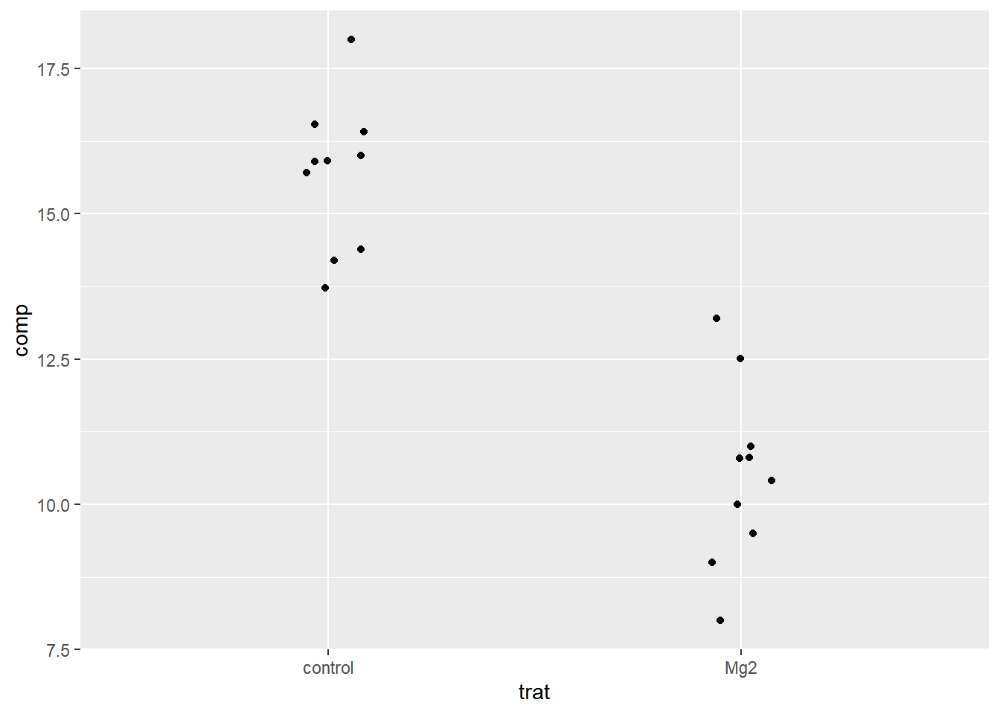
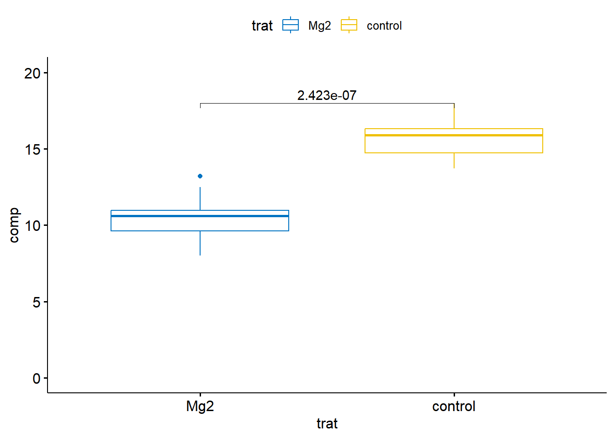

library(gsheet)
library(ggplot2)
library(dplyr)
Anexando pacote: 'dplyr'Os seguintes objetos são mascarados por 'package:stats':
filter, lagOs seguintes objetos são mascarados por 'package:base':
intersect, setdiff, setequal, unionlibrary(tidyr)
library(report)
library(rstatix)
Anexando pacote: 'rstatix'O seguinte objeto é mascarado por 'package:stats':
filterlibrary(ggpubr)
dat_mg <- gsheet2tbl("https://docs.google.com/spreadsheets/d/1bq2N19DcZdtax2fQW9OHSGMR0X2__Z9T/edit?gid=983033137#gid=983033137")
dat_mg |> ggplot(aes(trat, comp)) + geom_jitter(width = 0.1)
dat_mg2 <- dat_mg |>
pivot_wider(names_from = "trat", values_from = "comp") |>
select(-rep)
t_results <- t.test(dat_mg2$control, dat_mg2$Mg2)
report(t_results)Effect sizes were labelled following Cohen's (1988) recommendations.
The Welch Two Sample t-test testing the difference between dat_mg2$control and
dat_mg2$Mg2 (mean of x = 15.68, mean of y = 10.52) suggests that the effect is
positive, statistically significant, and large (difference = 5.16, 95% CI
[3.83, 6.49], t(17.35) = 8.15, p < .001; Cohen's d = 3.65, 95% CI [2.14, 5.12])t.test(comp ~ trat, data = dat_mg)
Welch Two Sample t-test
data: comp by trat
t = 8.1549, df = 17.354, p-value = 2.423e-07
alternative hypothesis: true difference in means between group control and group Mg2 is not equal to 0
95 percent confidence interval:
3.825607 6.490393
sample estimates:
mean in group control mean in group Mg2
15.678 10.520 test_pvalue <- data.frame(group1="control", group2="Mg2", p.value=2.423e-07, y.position=18)
p <- ggboxplot(dat_mg, x="trat", y="comp", color="trat", palette="jco")
p + stat_pvalue_manual(test_pvalue, label="p.value") + ylim(0, 20)
shapiro.test(dat_mg2$Mg2)
Shapiro-Wilk normality test
data: dat_mg2$Mg2
W = 0.97269, p-value = 0.9146shapiro.test(dat_mg2$control)
Shapiro-Wilk normality test
data: dat_mg2$control
W = 0.93886, p-value = 0.5404var.test(dat_mg2$Mg2, dat_mg2$control)
F test to compare two variances
data: dat_mg2$Mg2 and dat_mg2$control
F = 1.4781, num df = 9, denom df = 9, p-value = 0.5698
alternative hypothesis: true ratio of variances is not equal to 1
95 percent confidence interval:
0.3671417 5.9508644
sample estimates:
ratio of variances
1.478111